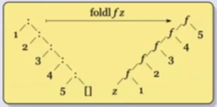

Esquemas de recursión
Esquemas de recursión sobre listas
Recursión estructural
Pensemos un par de funciones sobre listas:
-
sumaL: la suma de todos los valores de una lista de enteros-- alguna def con tipos sumaL [] = 0 sumaL (x:xs) = x + sumaL(xs) -
concat: la concatenación de todos los elementos de una lista de listas-- alguna def con tipos concat [] = [] concat (x:xs) = x ++ concat xs -
reverso: el reverso de una listareverso [] = [] reverso (x:xs) = reverso xs ++ [x]
El approach es siempre el mismo. Asumo que se calcular el resultado para el caso más chico y hago alguna operación para combinar todo, y el resultado puede ser otra cosa distinta, no necesariamente una lista. Sumado a eso tenemos un caso base distinguido.
g :: [a] -> b
-- caso base distinguido
g [] = z
g (x:xs) = f x (g xs)
Generalizando, obtenemos el fold:

-- recibimos una función, un elemento para el caso base y una lista
-- la función recibe un elemnto de la lista, y lo otro de tipo b es el resultado parcial
foldr :: (a -> b -> b) -> b -> [a] -> b
foldr _ z [] = z
foldr f z (x:xs) = f x (foldr f z xs)
Algunos ejemplos con foldr
Podemos repensar las funciones de antes usando foldr:
-- a = b = Int => (+) :: Int -> Int -> Int === a -> b -> b
sumaL = foldr (+) 0
-- a = b = [a'] => (++) :: [a'] -> [a'] -> [a'] === a -> b -> b
concat = foldr (++) []
-- a = a', b = [a'] => (:) :: a' -> [a'] -> [a'] === a -> b -> b
-- flip toma una función de 2 parámetros y les invierte el orden
-- al componerlo con (:[]) lo que hace es al primer parámetro (a')
-- lo mete en la lista vacía. Luego se pasa a flip (++) que va a
-- hacer el ++ usando el primer parámetro como segundo
reverso = foldr ((flip (++)) . (:[])) []
-- alternativa más legible en mi opinión
reverso = foldr (\elem -> \partial -> partial ++ [elem]) []
Y también podemos reimplementar map y filter usando foldr:
map f = foldr (\elem -> \partial -> (f elem):partial) []
-- alternativa: (:) es una función a -> [a] -> [a].
-- La compongo con f (sobre el primer elemento) y gané
-- map f = foldr ((:) . f) []
filter f = foldr (\elem -> \partial -> if f elem then (elem:partial) else partial) []
Podemos implementar (++) usando foldr?
(++) :: [a] -> [a] -> [a]
xs ++ ys = foldr (:) ys xs
Ahora probemos algo más complicado. Definamos sumaLong que calcula la
longitud y la suma en una únca pasada sobre una lista.
sumaLong :: [Int] -> (Int, Int)
-- hago pattern matching contra una tupla
sumaLong = foldr (\elem -> \(recLong, recSum) -> (recLong + elem, recSum + 1)) (0, 0)
Por último, podemos definir dropWhile usando foldr? Ej de uso: dropWhile even [2, 4, 1, 6] = [1, 6]. La definición "clásica" es:
dropWhile :: (a -> Bool) -> [a] -> [a]
dropWhile _ [] = []
dropWhile p (x:xs) = if p x then dropWhile p xs else x:xs
La intuición me dice de que esto no se va a poder, porque ahora no tenemos el final de la recursión cuando se nos acaba la lista, si no que depende de los elementos. Igual intentemos:
dropWhile = foldr (\x rec -> ????????) []
Tengo un problema... Si justo tenía que cortar en x, no tengo forma de
"decirle" al caso recursivo que no tiene que filtrar, y tampoco tengo cómo
recuperar lo que falta de la lista.
Cómo puedo sobreponerme a esto? Bueno, por algo vimos el ejemplo anterior de
SumaLong. Podría hacer que mi función devuelva una tupla, en donde el primer
elemento es el resultado del dropWhile y el segundo es la lista sin filtrar.
dropWhile p = fst (foldr (\x (droppedRec, undroppedRec) ->
if p x then (undroppedRec, x:undroppedRec)
else (x:droppedRec, x:undroppedRec)) ([], []))
-- alternativa
dropWhile p = fst (foldr (\x (droppedRec, undroppedRec) ->
(if p x then undroppedRec else x:droppedRec, x:undroppedRec)) ([], []))
-- alternativa: llamo a lo de arriba sin el fst dropWhileTupla y después dropWhile p xs = fst (dropWhileTupla p xs)
Recursión Primitiva
Tomando este problema que tuvimos con foldr para implementar dropWhile, por
qué no nos definimos otra función que si tenga en cuenta el xs del resto de
la lista?
El esquema de dropWhile sería:
g :: [a] -> b
-- caso base
g [] = z
-- recursión
g (x:xs) = f x xs (g xs)
Y la generalización la llamamos recr:
recr :: b -> (a -> [a] -> b -> b) -> [a] -> b
recr z _ [] = z
recr z f (x:xs) = f x xs (recr z f xs)
Las funciones Primitivas Recursivas son un conjunto de funciones que vemos en Lógica y Computabilidad, y en particular tienen un esquema de recursión muy parecido a este que acabamos de ver. Dicho eso, sabemos que no son todas las funciones computables debido a que por ejemplo no existe una primitiva recursiva que pueda calcular la función de Ackermann.
Sin embargo, es posible con foldr implementar la función de Ackermann. Esto
da cuenta realmente del poder de expresividad de foldr.
Podemos reimplementar dropWhile usando recr?
dropWhile p = recr [] (\x xs rec -> if p x then xs else x:rec)
Mucho más simple!
Podemos escribir foldr usando recr?
foldr f z = recr z (\x xs rec -> f x rec)
Y recr en términos de foldr?
-- Uso el mismo truco de antes, devuelvo la tupla manteniendo en el segundo elemento
recr z f = fst . (foldr (\x (rec, xs) -> (f x xs rec, x:xs)) (z, []))
Una alternativa a foldr :: (a -> b -> b) -> b -> [a] -> b es foldl (notar
que se invierte el orden de los tipos en la función):
foldl :: (b -> a -> b) -> b -> [a] -> b
foldl _ z [] = z
foldl f z (x:xs) = foldl f (f z x) xs
La lista ahora se "recorre" de adelante hacia atrás:

Otro detalle es que ahora el llamado recursivo no es parte de la f. Si
volvemos a revisar foldr vamos a notar que si xs era una lista infinita,
pero f ignora la lista no pasa nada. En cambio acá si tenés problemas porque
se consume la lista entera incluso si f no la usa.
Notar que en foldl el z es el resultado parcial, no el caso base (o más
bien, es el caso base en el primer elemento y después es el resultado parcial
acumulado).
Si queremos ver un ejemplo, tomemos sumaL:
sumaL = foldl (+) 0
Es igual! Pero el orden de evaluación cambia:
foldl (+) 0 [1, 2]
foldl (+) ((+) 0 1) [2]
foldl (+) ((+) ((+) 0 1) 2) []
((+) ((+) 0 1) 2)
((+) 1 2)
3
Otro ejemplo, el reverse!:
reverse = foldl (\acc x -> x:acc) []
-- equivalentemente
reverse = foldl (flip (:)) []
foldl vs foldr
- En listas infinitas? Usá
foldr - Puedo escribir
foldlusandofoldr?
-- galerazo: en lugar de acumular y listo, devuelvo una función
-- que cuando la aplique va a tomar el orden del foldl (asumamos
-- que g es alguna función que toma un elemento)
foldl f z xs = foldr (\x recf -> (\ac -> recf (f ac x))) (g)
Creo que ayuda más a entender si lo vemos con un ejemplo y lo expandimos:
-- supongamos que hacemos foldl f g [x, y]
-- al final de la recursión tenemos:
(\ac -> g (f ac y))
-- cuando se vuelve de la recursión y se aplica el siguiente paso
(\ac' -> (\ac -> g (f ac y)) (f ac' x))
-- Si hacemos el reemplazo en la evaluación:
(\ac' -> g (f (f ac' x) y))
-- ahí se puede ver que si ac' es el caso base z, tendría la evaluación en el orden del foldl
Por último entonces, alcanza con notar que si g = id ya gané. O sea que queda definida como:
foldl f z xs = foldr (\x recf -> (\ac -> recf (f ac x))) id z
- Puedo escribir
foldrusandofoldl? No, pero si para listas finitas
Esquemas de recursión sobre tipos de datos algebráicos
Árboles binarios
Recuerdo, yo podía definir un árbol binario como:
data Arbol a = Hoja a | Nodo a (Arbol a) (Arbol a)
Y podría querer por ejemplo aplicar una función a todos los nodos. A qué te
suena eso? Así es, al map. En el caso de árboles tendríamos un map definido
como:
mapA :: (a -> b) -> Arbol a -> Arbol b
mapA f (Hoja x) = Hoja (f x)
mapA f (Nodo a (sai) (sad)) = (Nodo (f a) (mapA f sai) (mapA f sad))
Así como puedo hacer map, puedo hacer fold también:
-- recibo una función para aplicar en el caso base y otra
-- para la combinación. La segunda recibe los resultados del
-- fold para ambas ramas
foldA :: (a -> b) -> (a -> b -> b -> b) -> Arbol a -> b
foldA f g (Hoja x) = f x
foldA f g (Nodo x izq der) = g x (foldA f g izq) (foldA f g der)
Algunas operaciones interesantes
-- no te suena al foldr (:) = id?
-- obs: fold aplicado a los constructores es la identidad
id = foldA Hoja Nodo
sumaA = foldA id (\x izq der -> x + izq + der)
altura = fold (\x -> 1) (\x izq der -> max izq der + 1)
Árboles Generales
data AG a = NodoAG a [AG a]
La pregunta es cómo hago fold/map con esto?
mapAG :: (a -> b) -> AG a -> AG b
-- uso tanto map como mapAG!!!
mapAG f (NodoAG a as) = NodoAG (f a) (map (mapAG f) as)
-- No tengo "caso base" porque map _ [] = [].
-- Ya está implícito el caso base
foldAG :: (a -> [b] -> b) -> AG a -> b
-- notar que es igual a antes, pero en lugar de aplicar al nodo
-- izquierdo o derecho lo aplico a todos los nodos de la lista
foldAG f (NodoAG a as) = f a (map (foldAG f) as)